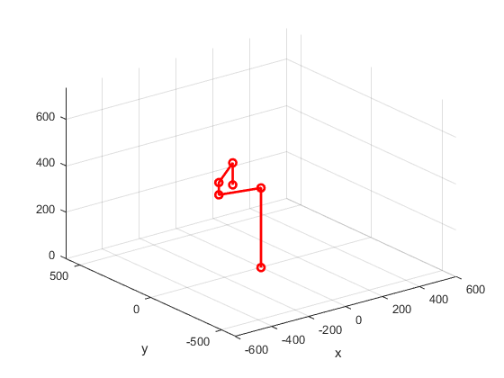

clear;
clc
E=0.01;
AH_MAX_t1=deg2rad(135);
AH_MIN_t1=deg2rad(-135);
AH_MAX_t2=deg2rad(150);
AH_MIN_t2=deg2rad(-150);
AH_MAX_t4=-70;
AH_MIN_t4=-195;
AH_l0=343;
AH_l1=200;
AH_l2=250;
AH_t4=0;
AH_o1=[0 0 1]';
AH_o2=[0 0 1]';
AH_o3=[0 0 1]';
AH_o4=[0 0 0]';
AH_q1=[0 0 0]';
AH_q2=[0 AH_l1 0]';
AH_q3=[0 AH_l1+AH_l2 0]';
AH_q4=[0 0 0]';
AH_theta_0=[0 0 0 0]';
AH_gst_0=[1 0 0 0;0 1 0 AH_l1+AH_l2;0 0 1 325;0 0 0 1];
AH_gd=[ 0.1564 -0.9877 0 0
0.9877 0.1564 0 200
0 0 1.0000 300.0000
0 0 0 1.0000];
AH_theta=AH_theta_0;
figure(1);
for t=1:100
AH_t1=AH_theta(1,1);
AH_t2=AH_theta(2,1);
AH_t3=AH_theta(3,1);
AH_t4=AH_theta(4,1);
AH_R1=e_ro(AH_o1,AH_t1);
AH_R2=e_ro(AH_o2,AH_t2);
AH_R3=e_ro(AH_o3,AH_t3);
AH_R4=eye(3);
AH_v1=-cross(AH_o1,AH_q1);
AH_v2=-cross(AH_o2,AH_q2);
AH_v3=-cross(AH_o3,AH_q3);
AH_v4=[0 0 1]';
AH_espi1=make_epsi(AH_v1,AH_o1);
AH_espi2=make_epsi(AH_v2,AH_o2);
AH_espi3=make_epsi(AH_v3,AH_o3);
AH_espi4=[AH_v4' AH_o4']';
AH_p1=twist_p(AH_o1,AH_v1,AH_t1);
AH_p2=twist_p(AH_o2,AH_v2,AH_t2);
AH_p3=twist_p(AH_o3,AH_v3,AH_t3);
AH_p4=[0 0 AH_t4]';
AH_exp_1=make_exp(AH_R1,AH_p1);
AH_exp_2=make_exp(AH_R2,AH_p2);
AH_exp_3=make_exp(AH_R3,AH_p3);
AH_exp_4=make_exp(AH_R4,AH_p4);
AH_epsi_thk=vee(logm(AH_exp_1*AH_exp_2*AH_exp_3*AH_exp_4*AH_gst_0/AH_gd));
AH_Jacobian=AH_get_Jacobian([AH_espi1 AH_espi2 AH_espi3 AH_espi4],AH_exp_1,AH_exp_2,AH_exp_3);
AH_ps_Jacobian=pinv(AH_Jacobian);
AH_theta=AH_theta-AH_ps_Jacobian*AH_epsi_thk;
Norm_of_phi=norm(AH_epsi_thk);
if Norm_of_phi<E
break;
end
end
if t==100
error('coordinate out of workspace!!!')
end
AH_t1=AH_theta(1,1);
AH_t2=AH_theta(2,1);
AH_t3=AH_theta(3,1);
AH_t4=AH_theta(4,1);
vector_theta=set_right_angle_four_axis([AH_t1 AH_t2 AH_t3 AH_t4]');
AH_t1=vector_theta(1,1);
AH_t2=vector_theta(2,1);
AH_t3=vector_theta(3,1);
AH_t4=vector_theta(4,1);
AH_R1=e_ro(AH_o1,AH_t1);
AH_R2=e_ro(AH_o2,AH_t2);
AH_R3=e_ro(AH_o3,AH_t3);
AH_R4=eye(3);
AH_v1=-cross(AH_o1,AH_q1);
AH_v2=-cross(AH_o2,AH_q2);
AH_v3=-cross(AH_o3,AH_q3);
AH_v4=[0 0 1]';
AH_espi1=make_epsi(AH_v1,AH_o1);
AH_espi2=make_epsi(AH_v2,AH_o2);
AH_espi3=make_epsi(AH_v3,AH_o3);
AH_espi4=[AH_v4' AH_o4']';
AH_p1=twist_p(AH_o1,AH_v1,AH_t1);
AH_p2=twist_p(AH_o2,AH_v2,AH_t2);
AH_p3=twist_p(AH_o3,AH_v3,AH_t3);
AH_p4=[0 0 AH_t4]';
AH_exp_1=make_exp(AH_R1,AH_p1);
AH_exp_2=make_exp(AH_R2,AH_p2);
AH_exp_3=make_exp(AH_R3,AH_p3);
AH_exp_4=make_exp(AH_R4,AH_p4);
AH_gst_theta=AH_exp_1*AH_exp_2*AH_exp_3*AH_exp_4*AH_gst_0;
pos_joint_a = [0 0 AH_l0 1]';
pos_joint_b = AH_exp_1*[0 AH_l1 AH_l0 1]';
pos_joint_c = pos_joint_b+[0 0 53 0]';
pos_joint_d = AH_gst_theta(:,4);
pos_joint_d(3,1)=395;
pos_joint_e = AH_gst_theta(:,4);
x=[0 pos_joint_a(1,1) pos_joint_b(1,1) pos_joint_c(1,1) pos_joint_d(1,1) pos_joint_e(1,1)];
y=[0 pos_joint_a(2,1) pos_joint_b(2,1) pos_joint_c(2,1) pos_joint_d(2,1) pos_joint_e(2,1)];
z=[0 pos_joint_a(3,1) pos_joint_b(3,1) pos_joint_c(3,1) pos_joint_d(3,1) pos_joint_e(3,1)];
figure(2)
plot3(x,y,z,'-ro','Linewidth',2);
axis([-600 600 -600 600 0 735])
xlabel('x')
ylabel('y')
hold on
grid on
